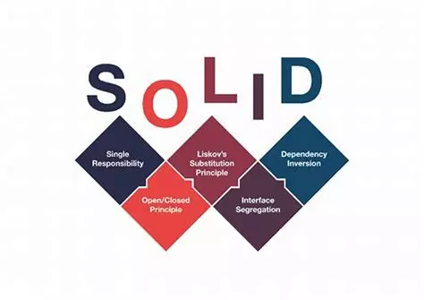
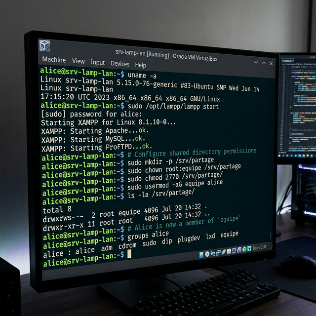

Administrer des systèmes informatiques communicants complexes
Gérer, configurer et sécuriser des environnements techniques afin de garantir leur disponibilité, leur intégrité et leurs performances.
// Apprentissages critiques ciblés (Niveau 2)
Développement complet d'une solution web client-serveur avec PHP, SQL/PhpMyAdmin et architecture SOLID. J'ai été responsable de la gestion de l'environnement serveur (LAMP), de la mise en place d'une base de données relationnelle, et de la sécurisation de l'authentification (sessions, hachage des mots de passe, protection CSRF).
// Preuves & traces d'apprentissage
- Déploiement serveur LAMP : configuration d'Apache, PHP 8, MySQL sur Ubuntu – mise en production de l'application sur un serveur dédié.
- Sécurisation des données : implémentation du hachage bcrypt pour les mots de passe, gestion des sessions sécurisées, protection contre les injections SQL via PDO et requêtes préparées.
- Architecture de base de données relationnelle : conception du schéma MCD/MPD, normalisation des tables, gestion des clés étrangères et des contraintes d'intégrité sous PhpMyAdmin.
- Rôle Scrum Master : coordination de l'équipe, suivi des sprints sur Trello, gestion des environnements de développement (local vs production).
// Compétences techniques & humaines mobilisées
📸 Captures visuelles
. Preuve concrète de la protection des données utilisateurs côté serveur, conformément aux recommandations OWASP.")

Développement d'une IA capable de calculer le chemin optimal dans un labyrinthe via l'algorithme A*. Ce projet impliquait une communication inter-processus entre modules, la gestion de données en mémoire et l'architecture MVC sur un code legacy complexe.
// Preuves & traces d'apprentissage
- Communication inter-processus : mise en place d'échanges de données structurés entre le moteur de jeu et l'agent IA via des flux standardisés.
- Reprise de code legacy : analyse et refactorisation d'un code existant pour intégrer l'architecture MVC sans régression fonctionnelle.
- Gestion de l'état système : maintien cohérent de l'état de la grille, des positions des entités et des ressources en temps réel.
- Tests et débogage : mise en place de logs pour tracer le comportement de l'IA et valider les performances de l'algorithme.
// Compétences techniques & humaines mobilisées
📸 Captures visuelles

Projet d'administration système réalisé sous VirtualBox avec une machine virtuelle Ubuntu Server. L'objectif était de déployer un environnement web complet (XAMPP), d'y héberger une application PHP accessible depuis la machine hôte, et de configurer un dossier partagé multi-utilisateurs avec gestion fine des permissions. Ce TP m'a confronté pour la première fois à l'administration réelle d'un serveur Linux de bout en bout.
// Preuves & traces d'apprentissage
- Création et configuration de la VM : installation d'Ubuntu Server 22.04 LTS
sur VirtualBox, configuration de la carte réseau en mode Bridge pour rendre le
serveur accessible depuis le réseau local (adresse IP fixe attribuée via
/etc/netplan). - Déploiement de XAMPP : installation de la stack XAMPP (Apache 2.4, MariaDB,
PHP 8.1) via le script
.run, démarrage des services (sudo /opt/lampp/lampp start), vérification de l'accessibilité du serveur Apache depuis le navigateur hôte via l'IP de la VM. - Hébergement d'une application web : dépôt d'un projet PHP dans le
répertoire
/opt/lampp/htdocs/, test de rendu depuis le navigateur de la machine hôte à l'adressehttp://192.168.x.x/monprojet. - Création d'un dossier partagé : mise en place d'un répertoire
/srv/partage/accessible par plusieurs utilisateurs Linux (alice,bob,invite), avec configuration d'un groupe dédié (groupadd equipe,usermod -aG equipe alice). - Gestion fine des autorisations : application des permissions
chmod 2770(SGID pour que les nouveaux fichiers héritent du groupe), distinction des droits lecture/écriture/exécution par utilisateur et par groupe, vérification avecls -laet tests croisés entre sessions utilisateurs. - Sécurisation des accès : désactivation du compte
rootSSH, création de comptes utilisateurs avec mots de passe hachés, restriction des accès au dossier partagé pour l'utilisateurinvite(lecture seule viachmod 750).
// Compétences techniques & humaines mobilisées
📸 Captures visuelles
